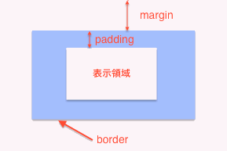

CSS入門¶
ここではCSSに関する基礎的な知識や書き方について解説していきます。
やってみよう!¶
<!DOCTYPE html>
<html lang="ja">
<head>
<meta charset="UTF-8">
<link href="style.css" rel="stylesheet" type="text/css">
<title>CSS演習</title>
</head>
<body>
<h1 id="red">赤の見出し</h1>
<h1 id="blue">青の見出し</h1>
<h1 id="yellow">黄の見出し</h1>
<p id="back">背景の色を変えることも簡単にできます</p>
<div class="colorBlocks">
<p>背景に画像を指定することも可能です。</p><br>
<p>色や画像によってHTMLにデコレーションを追加します。</p>
</div>
<img id="border" src="http://www.uhero.co.jp/common/images/logo.png" alt="uhero"/>
<ul>
<li id="left">左寄り</li>
<li id="center">中央</li>
<li id="right">右寄り</li>
</ul>
<p id="font">他にもフォントを変更したり</p>
<p id="size">サイズを変更したり</p>
<p id="line">取り消し線を引いたり</p>
<p id="shadow">影をつけたりできます。</p>
</body>
</html>
#red {
color: red;
}
#blue {
color: blue;
}
#yellow {
color: yellow;
}
#left {
text-align: left;
}
#back {
background-color: orange;
}
.colorBlocks {
background-image: url("http://works45.jp/img/backimg/menu_cboard_light24.gif");
}
#border {
margin: 30px 30px;
padding: 10px;
border: medium solid green;
}
#center {
text-align: center;
}
#right {
text-align: right;
}
#font {
font-family: "ＭＳ ゴシック",sans-serif;
}
#line {
text-decoration: line-through;
}
#size {
font-size: 25px;
}
#shadow {
text-shadow:3px 3px 2px red;
}
CSSとは?¶
ブロックレベル要素とインライン要素について¶
ブロックレベル要素
ブロックレベル要素は見出し、段落など文章を構成する基本となる要素です。 ブロックレベル要素の中にブロックレベル要素やインライン要素を入れることはできます。
例：<div> <table> <p> <ol> <dl> <ul> <h1>-<h6>など
インライン要素
インライン要素は、ブロックレベル要素の中で使われるもので、文章の一部に特定の機能などをもたせる要素です。
例：<a> <br> <strong>など
ノート
HTML5では、ブロックレベル要素とインライン要素の区別はなくなりましたが、今後も意識しておくと役立つでしょう。
HTML5における要素の分類は こちら を参照してください。
セレクタとプロパティと値¶
p { color: red; }
p { color: red; font-size: 15px; background-color: black; }
課題1
下記のCSSの[todo]部分を正しく埋めて、<h1>タグを青くするCSSを書きなさい。
[todo] { color: [todo]; }
idとclass¶
例１：全ての<p>タグに適用する場合
p { color: red; opacity: 0.5; }
例２：一つの特定の<p>タグに適用する場合
HTML
<p id="hogehoge">ここには適用されます。</p> <p>ここには適用されません。</p>
CSS
#hogehoge { color: red; opacity: 0.5; }警告
同一のIDはひとつのHTML文書の中では一回しか使うことができません。
例３：いくつかの<p>タグにまとめて適用する場合
HTML
<p class="foo">ここには適用されます。</p> <p>ここには適用されません。</p> <p class="foo">ここにも適用されます。</p>
CSS
.foo { color: red; opacity: 0.5; }ノート
CLASSは複数の要素で使うことができます。
課題2
下記のHTMLの<p>タグに適切なclass名を書いた上でCSSの[todo]部分を補い、「青い」が含まれる段落（<p>タグで囲まれた部分）を青く、「赤い」が含まれる段落を赤くしなさい。
HTML
<p class="blue">青いですー！</p> <p>ここは関係なーい！</p> <p class="red">赤いですなー</p> <p>赤いですね</p> <p>青いです！</p> <p>無関係だよん。</p>[todo] { color: red; } [todo] { color: blue; }
ウェブカラーとピクセル¶
主要cssの紹介¶
プロパティ 概要 値 サンプルコード color 色を変える 色 color : red ブラウザ表示例 : サンプルテキスト
プロパティ 概要 値 サンプルコード background 背景を変える 色や画像など background : yellow ブラウザ表示例 : サンプルテキスト
プロパティ 概要 値 サンプルコード font-weight フォントの太さを変える スタイル font-weight : bold ブラウザ表示例 : サンプルテキスト
プロパティ 概要 値 サンプルコード font-size 文字サイズを変える 数値や%等 font-size : 35px ブラウザ表示例 : サンプルテキスト
ブラウザ表示例 :
プロパティ 概要 値 サンプルコード text-align 行揃えの位置を変える left,right等 text-align : right サンプルテキスト
プロパティ 概要 値 サンプルコード border 枠線を指定 スタイル・太さ等 border : double 10px red ブラウザ表示例 : サンプルテキスト
プロパティ 概要 値 サンプルコード list-style マーカーに関する指定 スタイル・画像 list-style: square ブラウザ表示例 :
- サンプルテキスト
プロパティ 概要 値 サンプルコード vertical-align 垂直方向の揃え位置を指定 スタイル・数値 vertical-align: top ブラウザ表示例 :
上端揃えのサンプル【ここに適用されてます】
プロパティ 概要 値 display 要素の表示形式（ブロック・インライン）を指定する スタイル <ul id="navi"> <li>サンプルテキスト1</li> <li>サンプルテキスト2</li> <li>サンプルテキスト3</li> </ul>#navi li{ display: inline; }ブラウザ表示例 :
- サンプルテキスト1
- サンプルテキスト2
- サンプルテキスト3
マウスをかざした時のhover¶
<p>マウスをかざしてください</p>p { color: red; } p:hover { color: yellow; background-color: green; }ブラウザ表示例: マウスをかざしてください
margin と padding¶

サンプルテキスト
サンプルテキスト margin:30px 30px 30px 30px
サンプルテキスト padding:30px 30px 30px 30px
サンプルテキスト margin:30px 30px 30px 30px padding:30px 30px 30px 30px
黄
margin-bottom:-80px赤
margin-left:80px
課題3
<div>タグを使って、領域間のスペースが60px、領域内のスペースが30px、幅が200px、高さが150pxで背景を黄色になるように下記のCSSの[todo]部分を補いましょう。
- HTML
<div></div>
CSS
div { margin: [todo]; padding: [todo]; [todo]:200px; height: [todo]; background-color: yellow; }
中央配置にしてみる¶
margin: 0 auto;
floatとclear¶
<p>ユヒーロのロゴです。<img src="http://www.uhero.co.jp/common/images/logo.png">floatが無い状態です。</p>
ユヒーロのロゴです。 floatが無い状態です。
floatが無い状態です。
<p>ユヒーロのロゴです。<img id="logo" src="http://www.uhero.co.jp/common/images/logo.png">画像にfloat:leftがついています。</p>
#logo {
float: left;
}
ユヒーロのロゴです。
画像にfloat:leftがついています。
<p>ユヒーロのロゴです。<img id="logo" src="http://www.uhero.co.jp/common/images/logo.png">画像にfloat:leftがついています。</p> <p>いろいろな要素を後に記述しても</p> <p>すべて右に回ってしまいます。</p>
ユヒーロのロゴです。 画像にfloat:leftがついています。
画像にfloat:leftがついています。
いろいろな要素を後に記述しても
すべて右に回ってしまいます。
| right | 右フロートに対する廻り込みを解除します。 |
| left | 左フロートに対する廻り込みを解除します。 |
| both | 左フロートに対する廻り込みと右フロートに対する廻り込みの双方を解除します。 |
<p>ユヒーロのロゴです。<img id="logo" src="http://www.uhero.co.jp/common/images/logo.png">画像にfloat:leftがついています。</p>
<div style="clear:left" />
<p>clearしているので、フロートの右に回ることはありません。</p>
ユヒーロのロゴです。 画像にfloat:leftがついています。
画像にfloat:leftがついています。
clearしているので、フロートの右に回ることはありません。
課題4
<div id="redBox"></div>
<p>私を右側にまわりこませて。</p>
[todo]
<p>私はまわりこませないで。</p>
#redBox {
width: 100px;
height: 100px;
background-color: red;
[todo]
}
CSSのバージョンについて¶
p { color: red; opacity: 0.5; }
サンプルテキスト
サンプルテキスト
マウスをかざしてください
課題5
CSS最終課題 - ユヒーロWebサイトをつくろう¶
それではまず assignment_css.zip をダウンロードし、デスクトップなど分かりやすい所に保存してください。
ここから 制作例 がダウンロードできます。